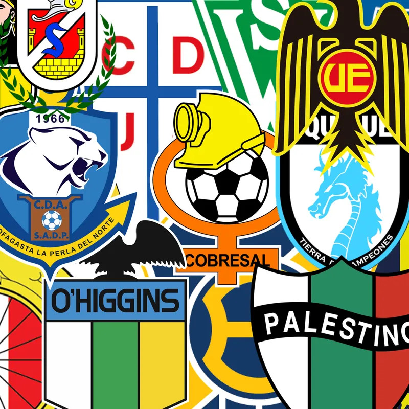
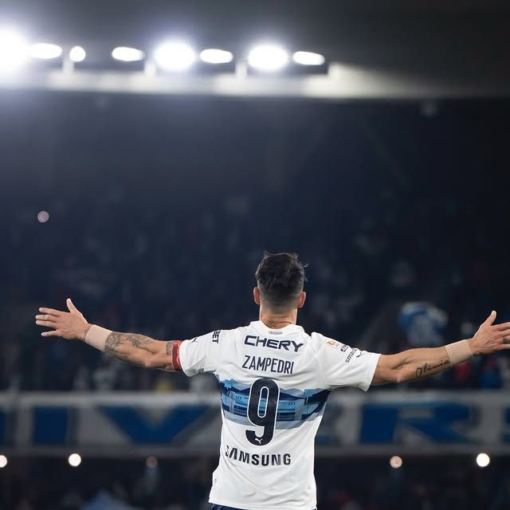
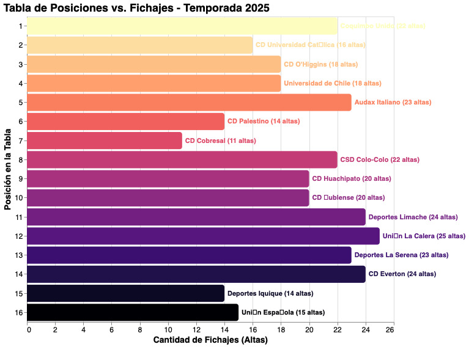

El análisis de las últimas siete temporadas en la Primera División de Chile deja una lección contundente: en el fútbol chileno, el orden y la estabilidad suelen ser más rentables que el dinero invertido. Si bien existe una brecha económica histórica y estructural que posiciona a Colo Colo, Universidad de Chile y Universidad Católica un escalón por sobre el resto en valor de mercado, los billetes por sí solos no compran copas. El dinero puede otorgar una ventaja inicial y un colchón financiero, pero es la gestión de ese recurso la que define el éxito.
En base a la investigación realizada, se puede concluir que el éxito de los procesos largos y la catástrofe que suele acompañar a la rotación excesiva de directores técnicos y jugadores no son casualidades, sino una tendencia, y aunque pueden haber excepciones (como la Universidad Católica de 2021 que campeonó cambiado varias veces de DT, o Cobreloa 2024 que descendió manteniendo el suyo), la regla general es clara.
El caótico desenlace de la temporada 2025 funciona como el reflejo fiel de esta premisa. Fue el año en que Colo Colo, en el año de su centenario, se quedó con las manos vacías y sin pasaje a copas internacionales, mientras que Everton, a pesar de la fuerte inyección económica que recibió del Grupo Pachuca, terminó salvándose del descenso en la última fecha. En la otra vereda, un proyecto más austero pero cohesionado como Coquimbo Unido terminó levantando la copa. El hecho que siete de los nueve clubes que rearmaron sus planteles con más de veinte fichajes hayan terminado de la mitad de la tabla hacia abajo es la prueba empírica de que acumular nombres no es lo mismo que construir un equipo.
En un fútbol chileno marcado por una desigualdad financiera y la inestabilidad institucional, apostar por la continuidad y el mediano plazo parece ser el camino más eficiente para desafiar el desequilibrio económico. Al final del día, los datos presentados, y casos como el de Coquimbo Unido nos recuerdan que, si bien el dinero es un factor de peso, este no puede comprar la estabilidad ni la cohesión de un equipo.



De esta manera, el torneo dejó una lección clara: 7 de los 9 clubes que sumaron más de 20 incorporaciones durante el año terminaron de la octava posición hacia abajo, demostrando que salir a fichar en masa no siempre garantiza los mejores resultados.